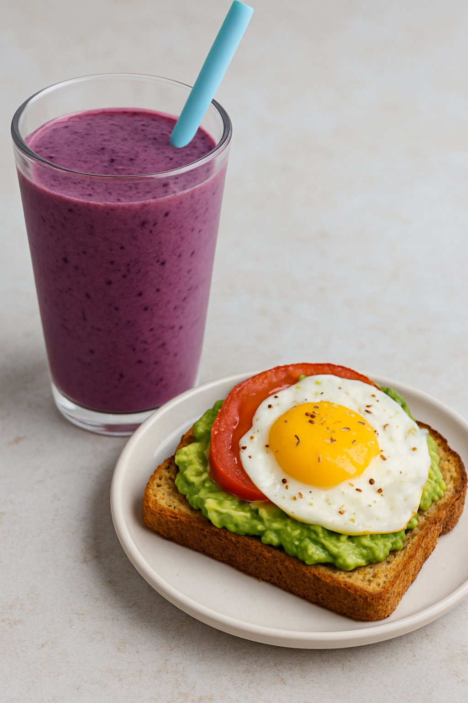
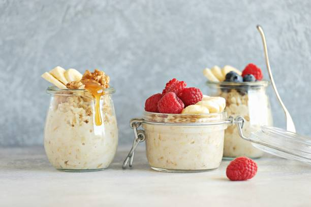

Breakfast Recipes

Protein Smoothie and Avocado Toast
Serves: 1-2
Smoothie Ingredients
- 1 cup frozen fruit
- 1 small banana
- 1/2 cup almond milk
- 1/2 cup orange juice
- 1 serving of your favorite vanilla or unflavored protein powder
- 1 tbsp chia seeds * optional
- 1 handful of spinach * optional
Avocado Toast Ingredients
- 2 slices whole grain bread
- 1 ripe avocado
- Salt and Pepper to Tast
- Optional Toppings: tomatoes, fried egg, microgreens, red pepper flakes, everything bagel seasoning, olive oil drizzle.
Smoothie Instructions
- Add the liquid to the blender first: Add remaining ingredients, blend until smooth, about 60-90 seconds if you blender doesnt have a "smoothie" setting.
- Taste Test: add more almond milk if too thick, agave or honey if not sweet enough.
- Serve immediately: Pour it up in a cute glass with a wide straw! Enjoy!
Avo Toast Instructions
- Toast your bread to your liking: Golden and crispy for me!
- Mash the avocado: While bread is toasting, mash the avocado in a bowl and add salt and pepper.
- Dress it up: Add your favorite toppings to your avocado toast. I like a fried or over medium egg, chili flake, and a big tomato slice!
- Serve: Serve with your smoothie for a delicious breakfast!

Overnight Oats
Serves: ~4
Ingredients
- 2 cups old fashioned oats
- 2 cups milk of choice
- 1 cup Greek yogurt
- 1-2 tbsp honey or maple syrup
- 1 tsp vanilla extract
- 1/2 tsp cinnamon
- 2 tbsp chia seeds
- 1/2 cup fresh or frozen fruit (berries, banana, apple)
- Optional toppings: granola, nuts, seeds, nut butter, coconut flakes
Instructions
- Prep the oats: In a large bowl or container, whisk together oats, milk, yogurt, cinnamon, chia seeds, sweetner, and vanilla.
- Stir in the berries: Add your choice of berries (fresh or frozen) like blueberries, strawberries, or raspberries. Stir to combine.
- Chill: Seperate into 4 wide mouth mason jars. Cover and refrigerate overnight (or at least 4 hours) to allow oats to absorb liquid and soften.
- Get creative: In the morning, give it a stir and add any additional toppings desired, I recommend trying out variations and consider a banana, dark chocolate pieces, coconut shavings, or peanut butter. Yum!